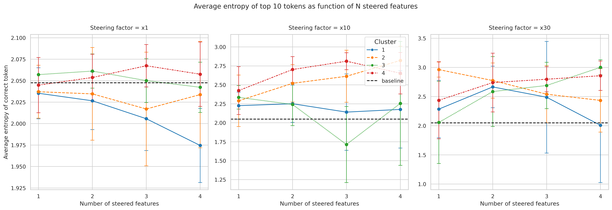
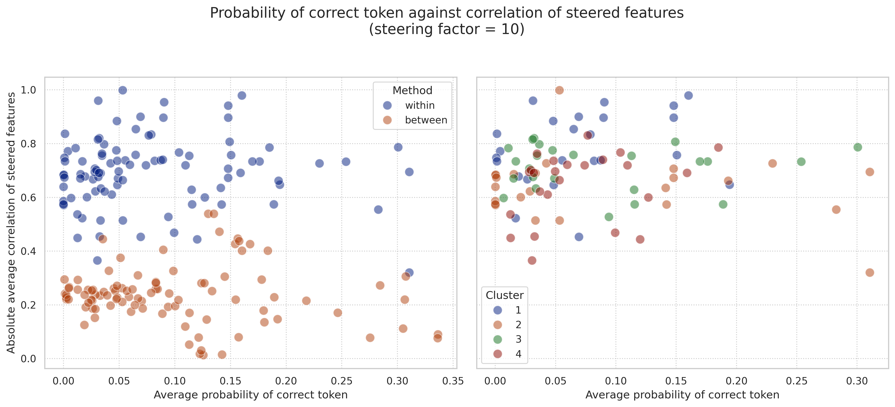

Introduction
Over the past few months, I’ve been doing a fairly deep dive into AI safety and alignment—a topic that's become harder to ignore as machine learning continues to advance. During the time I've spent working as an ML scientist, I've come to realise more and more that, while building smarter and more capable models is exciting, understanding the risks and ensuring these models behave as expected is just as crucial. This led me to enroll in the BlueDot AI Alignment course, which offered a really good overview of the key challenges we face in making AI systems aligned with human values (I'll mention a bit more about the course later!)
One topic that really hooked me is mechanistic interpretability—basically, trying to reverse-engineer neural networks to figure out how they’re thinking (or at least processing information). In particular, I found Chris Olah and others' article, Zoom In [1], really engaging. The piece presents an approach to mechanistic interpretability by breaking down individual neurons and circuits within neural networks to uncover the roles they play. By meticulously zooming in, Olah and his team demonstrate how different components contribute to the broader functioning of large models. Coming from a neuroscience background, this approach felt oddly familiar.
Neuroscience has a long history of "zooming in" to understand how individual components contribute to the whole system. Edgar Adrian’s pioneering single-unit recordings in the 1920s demonstrated how single neurons in sensory systems encode information by varying their firing rates. In the 1950s, Hodgkin and Huxley mapped the electrical behavior of individual neurons in their famous squid axon experiments, revealing the ionic mechanisms behind action potentials. David Hubel and Torsten Wiesel’s work in the 1960s uncovered how neurons in the visual cortex respond to specific features, such as edges and movement, helping us understand how sensory information is processed in the brain. And, of course, John O’Keefe’s discovery of place cells in the hippocampus showed how certain neurons represent spatial information, laying the groundwork for our understanding of memory and navigation (I've had the pleasure of chatting to John O'Keefe over a beer and he's one of the nicest researchers I've met!)
As much as I loved the Zoom In paper, a niggling thought kept bubbling up in the back of my mind while I was reading it: do we really want to keep zooming in? While it’s clear that the insights gained from this granular approach are invaluable, I think for mechanistic interpretability to have a big impact, research will need to zoom back out a little. After all, understanding the bigger picture can be just as crucial as dissecting the details. The intricate details of both AI systems and the brain can show us new insights when we step back and look at the bigger picture, reminding us that while diving deep into specifics is great, it’s also important to appreciate how everything fits together.
These thoughts formed the foundation of a short research project that I'll present here, which serves as the final assignment for the AI Alignment course. However, my motivations extend beyond merely completing coursework:
- I aimed to upskill in this area, learning to use relevant libraries and gaining a deeper understanding of working with self-attention encoders (SAEs).
- I wanted to explore an interesting question that bridges my background in neuroscience with the cutting-edge field of AI interpretability.
- I was curious to see if meaningful exploratory mechanistic interpretability work could be done on a shoestring budget. (Spoiler: I spent under $10 and used only a T4 GPU on Google Colab!)
Before we dive in, I want to emphasize that I'm relatively new to the field of mechanistic interpretability. Everything presented in this post should be taken with a healthy dose of skepticism. I welcome feedback and constructive criticism—if you spot any incorrect assumptions, misunderstandings, or anything that doesn't quite add up, please don't hesitate to let me know.
I want to share my thoughts openly, but please don’t mistake that for overconfidence. When I say something like "for mechanistic interpretability to really make an impact, we might need to zoom back out," I recognize that I could be way off—I've just scratched the surface compared to the amazing researchers in this field. But hey, if I can’t share my opinions here, where else can I? So, just a heads-up: take everything in this article with a grain of salt; I might be totally wrong, and I get that!